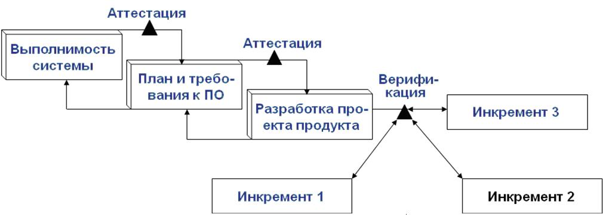
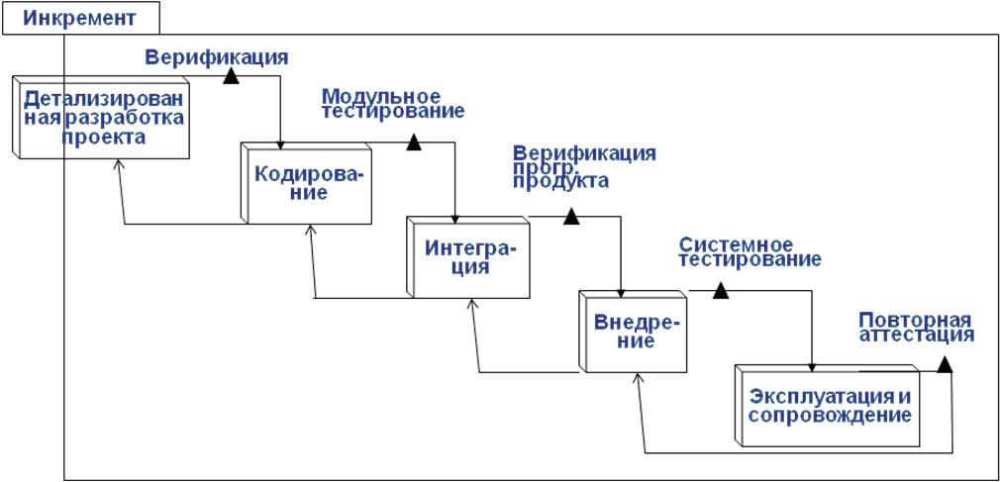

Инкрементная модель
Это процесс частичной реализации всей системы и медленного наращивания функциональных возможностей.
На ранних этапах выполняется конструирование системы в целом
Модель эффективна при использовании как в случае чрезвычайно больших, так и в небольших проектов. Представлена на рисунках 2.6 - 2.7.

Рисунок 2.6 - Инкрементная модель

Рисунок 2.7 - Структура инкремента
Преимущества инкрементной модели.
- Не требуется заранее тратить средства, необходимые для разработки всего проекта.
- При выполнении каждого инкремента получается функциональный продукт.
- Заказчик может высказаться по поводу каждой разработанной версии системы.
- Существует возможность поддерживать постоянный прогресс в ходе выполнения проекта.
- Снижаются затраты на первоначальную поставку программного продукта.
- Снижается риск неудачи и изменения требований.
- Риск распределяется на несколько меньших по размеру инкрементов.
Недостатки инкрементной модели.
- Не предусмотрены итерации в рамках каждого инкремента.
- Определение полной функциональной системы должно осуществляться в начале ЖЦ.
- Может возникнуть оттягивание решений трудных проблем на будущее.
- Для инкрементов трудно выполнить анализ и проверку.
Область применения инкрементной модели.
- Требования можно сформулировать заранее.
- Существует потребность быстро поставить на рынок продукт.
- На выполнение проектов предусмотрен большой период времени разработки.
- При равномерном распределении свойств различной степени важности.
- При выполнении проекта с применением новой технологии.